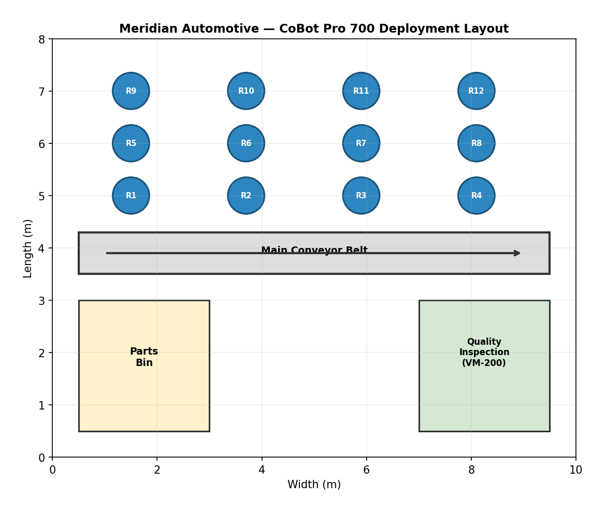
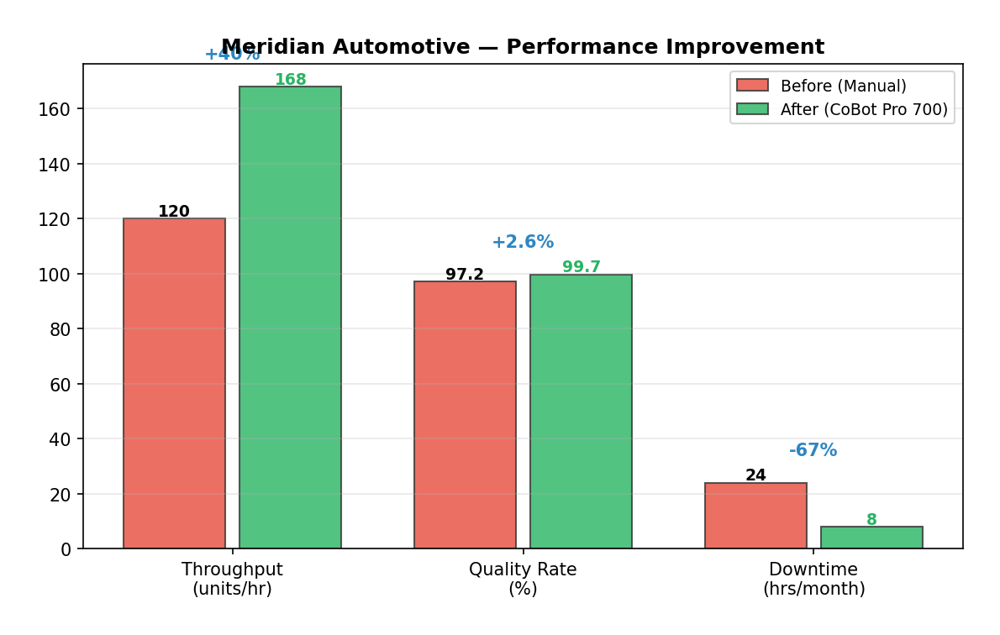
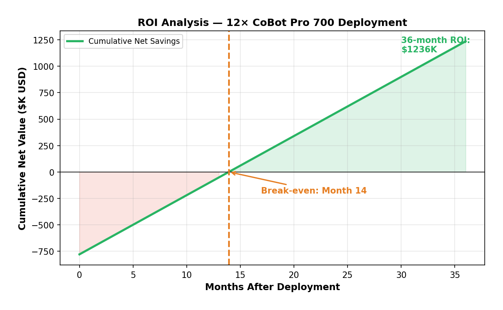

Meridian Automotive is a Tier-1 automotive supplier headquartered in Detroit, Michigan, with annual revenues of $2.8 billion and 14 manufacturing plants across North America and Europe. This case study documents Meridian's deployment of 12 Contoso Robotics CoBot Pro 700 units at their flagship Dearborn assembly plant — a project that delivered a 40% increase in throughput, 99.7% quality yield, and full return on investment in under 14 months.
Meridian's Dearborn plant produces brake caliper sub-assemblies for three major OEM customers, running three shifts across two production lines. In early 2024, Meridian faced a convergence of challenges that threatened their ability to meet contractual delivery targets:
Meridian evaluated five collaborative robot platforms from four vendors. The CoBot Pro 700 was selected based on its integrated Safety Controller SC-100, the CoBot Vision Module VM-200 for inline inspection, and CoBot Studio IDE's rapid programming capabilities.
Contoso Robotics and Meridian's automation engineering team designed a phased deployment of 12 CoBot Pro 700 units across the two production lines:

| Station | CoBot Pro 700 Units | Task | Accessories |
|---|---|---|---|
| Screw Driving | 4 | M6 and M8 bolt insertion and torquing (12–35 Nm) | Torque-controlled screwdriver end-effector |
| Sealant Dispensing | 4 | RTV silicone bead application on caliper mating surfaces | Precision dispensing valve, force-torque sensor |
| Visual Inspection | 4 | Surface defect detection, dimensional verification, barcode traceability | CoBot Vision Module VM-200 |
All 12 CoBot Pro 700 units run CoBot OS v4.2 and are programmed through CoBot Studio IDE. The robots communicate with Meridian's Siemens S7-1500 PLC via EtherCAT, and with the plant MES (Manufacturing Execution System) via OPC UA. The four inspection stations use the VM-200 running DefectNet-v2 for surface defect detection and DimCheck-v1 for critical dimension verification.
For details on how CoBot Pro integrates with existing automation infrastructure via ROS 2, refer to the ROS 2 Integration Guide in the Contoso Robotics Support documentation.
| Phase | Duration | Activities |
|---|---|---|
| Assessment and Design | 4 weeks | On-site workflow analysis, cell layout design, risk assessment per ISO 12100, cycle time simulation in CoBot Studio IDE |
| Procurement and Staging | 3 weeks | Order 12 CoBot Pro 700 systems + 4 VM-200 modules, pre-stage and test at Contoso Robotics integration lab |
| Line 1 Installation | 2 weeks | Install 6 cobots on Line 1, integrate with PLC and MES, train 8 operators, run parallel production |
| Line 1 Validation | 2 weeks | Production validation: 10,000-unit quality audit, cycle time confirmation, safety zone verification |
| Line 2 Installation | 2 weeks | Replicate Line 1 configuration on Line 2 using saved CoBot Studio IDE programs |
| Full Production | 1 week | Both lines running at full rate, final sign-off by Meridian quality and safety teams |
Total implementation time: 14 weeks from project kickoff to full production on both lines.

Assembly throughput increased from 45 units/hour to 63 units/hour — a 40% improvement — eliminating the bottleneck between CNC machining and final assembly. The line now operates at full CNC output without overtime or additional shifts.
The VM-200 vision inspection stations achieved a 99.7% first-pass quality yield, exceeding the OEM contractual requirement of 99.5%. Defect escapes dropped from 3.8% to 0.3%, with the largest improvement in detecting hairline surface cracks previously missed by manual inspection.
OSHA-recordable ergonomic injuries related to repetitive assembly tasks dropped from 18 per year to zero in the first 6 months following deployment. The CoBot Pro 700's integrated SC-100 safety controller enabled fenceless operation, with human operators working within arm's reach without safety cages.
Using CoBot Studio IDE, Meridian trained new operators to monitor and adjust cobot programs in just 2 days — compared to the 3-week training cycle for the manual processes the cobots replaced.

| Cost Category | Amount |
|---|---|
| 12× CoBot Pro 700 Base Systems | $414,000 |
| 4× VM-200 Vision Modules | $27,600 |
| End-Effectors and Accessories | $48,000 |
| Integration Services (Contoso Robotics) | $85,000 |
| Operator Training | $12,000 |
| Total Investment | $586,600 |
| Savings Category | Annual Amount |
|---|---|
| Labor cost reduction (12 FTE positions reallocated) | $384,000 |
| Quality improvement (reduced scrap and rework) | $92,000 |
| Overtime elimination | $47,000 |
| Ergonomic injury cost avoidance | $28,000 |
| Total Annual Savings | $551,000 |
Payback period: 12.8 months. Meridian projects cumulative savings of $1.52 million over the first 3 years, representing a 159% return on investment.
"The CoBot Pro 700 transformed our Dearborn assembly operation. We went from struggling to fill operator positions to running at full CNC output with better quality, zero ergonomic injuries, and a payback period under 15 months. The CoBot Studio IDE made it easy for our existing technicians to learn the system, and the VM-200 vision module caught defects our best inspectors were missing. Contoso Robotics has been a true partner — from the initial assessment through ongoing support. We're already planning to deploy CoBot Pro 700 units at three additional plants."
— Sarah Chen, Vice President of Manufacturing, Meridian Automotive
To sustain the performance gains achieved in this deployment, Meridian follows the preventive maintenance schedule recommended by Contoso Robotics. This includes quarterly joint lubrication, annual harmonic drive inspection, and bi-annual safety controller calibration. Full maintenance procedures and schedules are documented in the Preventive Maintenance Schedule guide in the Contoso Robotics Support documentation.
For more information about the CoBot Pro 700 or to schedule an on-site assessment for your facility, contact Contoso Robotics at sales@contoso-robotics.com or call +1-800-CONTOSO.
Document version 1.1 | Last updated: 2025-02-10 | Contoso Robotics Marketing